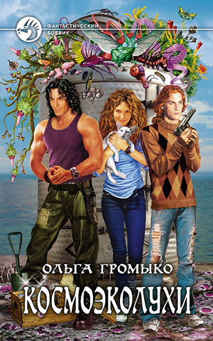
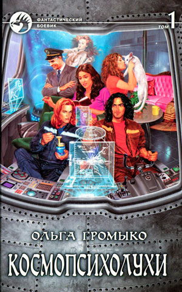
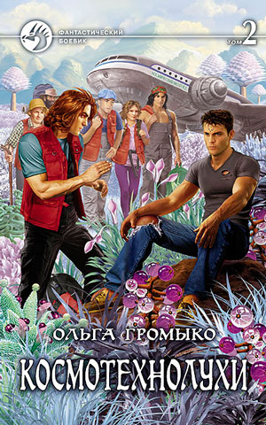
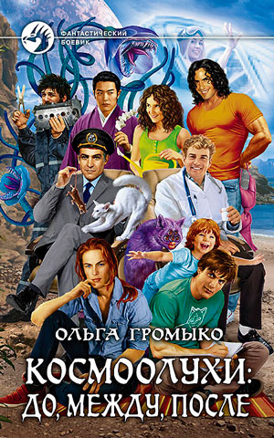

Куда податься незадачливым пиратам, когда все земные океаны исплаваны, необитаемые острова заселены, а клады выкопаны? Конечно же в космос! А вслед за ними туда отправятся секретные базы, настырные ученые, бравые десантники, зловредные киборги, приключения и… комедия положений. Потому что у юмора, как и у Вселенной, нет границ! У глупости, впрочем, тоже…
Космоэколухи

Работа космического дальнобойщика рутинна и скучна. Ну разве что некондиционный груз попадется, безбилетники на борт пролезут, авария приключится, пассажиры забудут кое о чем предупредить, инопланетные чудища нападут или старые знакомые на огонек бластера заглянут. А так — тишь да гладь… И чего капитан вечно недоволен?!
Космопсихолухи

Вселенная подчиняется всеобщему закону притяжения: капитан притягивает команду, навигатор — удачу, пилот — гонки, зоолог — уникальные формы жизни, механик — ремонт, доктор — пациентов, кошка — блох, а все вместе — приключения!
Читайте на нашем инфосайте: «Как завести новых друзей и перевоспитать старых» «Родственники: проблема или… много проблем?» «Где отметить день рождения и куда сходить на шопинг» А также последние достижения ксенопсихологии и прикладного лисоведения!
Космотехнолухи

Как бы бравый старшина Петухов ни желал забыть прошлое, рано или поздно оно непременно постучится к нему в иллюминатор! Да и прочие радости и гадости уже ждут своего часа: все больше приключений, забот и «котиков» встают на пути неунывающей команды. Ей предстоят новые знакомства, неизведанные планеты, головокружительные гонки и сражения и даже брачные игры в открытом космосе!
Итак, встречайте: «Космический мозгоед» снова выходит на большую межгалактическую дорогу!
Космоолухи:до, между, после

Сборник рассказов про жизнь команды и отдельных её членов до начала истории, между книгами и после окончания цикла.